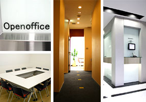
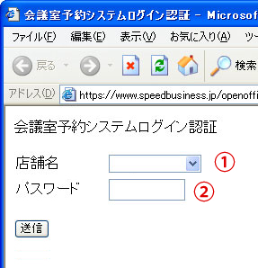

このページでは、オープンオフィス各拠点にあります
「ミーティングルーム」
および「ミーティングルーム予約システム
（通称「カイギばん」）の情報をお伝えします。
オープンオフィスの各拠点には専用の個室のほかに
無料で使える「ミーティングルーム」があります。
それぞれ4名〜6名で利用でき
接客、商談、社内外会議、などに使えます。
※メンテナンス中※
1. ご利用の店舗を選択します。
2. パスワードを入力し、「送信」を押します。

オープンオフィスのみなさんが、快適に会議室をご活用いただけますよう、
下記の利用ルールを守って正しく使いましょう。
≪１日の中での時間制限は、次の４つの条件があります≫
①ミーティングルームの予約は３０分単位で１２０分を限度とし、1日最長１８０分までとなります。
◆利用パターン（例）ご予約時間合計180分の場合
（１）60分＋60分＋60分
（２）90分＋90分
（３）120分＋60分
※もちろん30分単位でもご利用可能です。
②複数のミーティングルームがある場合(*)も、同様に1日最長１８０分までとします。
③同じミーティングルームに別途予約をとる場合は、間を６０分以上あけなければ予約ができません。
但し、2つ以上ミーティングルームがある店舗では、他のミーティングルームの予約であれば、
前の予約終了時間より続けてご予約が可能です。
④１５日以上先の予約に関しては、１週間(７日間)につき５４０分迄の予約しかできません。
その場合でも、１日で予約できる最大時間は１８０分までです。
１４日以内の予約に関しましては、①②③のルールのみとなります。
(*) 複数利用できる店舗：渋谷TOC(2) 赤坂ビジネスプレイス(2) 南青山(3) 日本橋セントラル(3) 乃木坂(3) 青山一丁目(3) 長者丸通り(2)
不要になったご予約は必ずキャンセルをお願いします。
変更・削除する場合がございますので、ご了承下さい。
退室時は椅子や机の整理整頓、電気・空調を消すのを忘れずに！
ご協力お願い致します。
※メンテナンス中にてご迷惑をおかけしております。
お問い合せはオープンオフィス東京本社までお願いいたします。